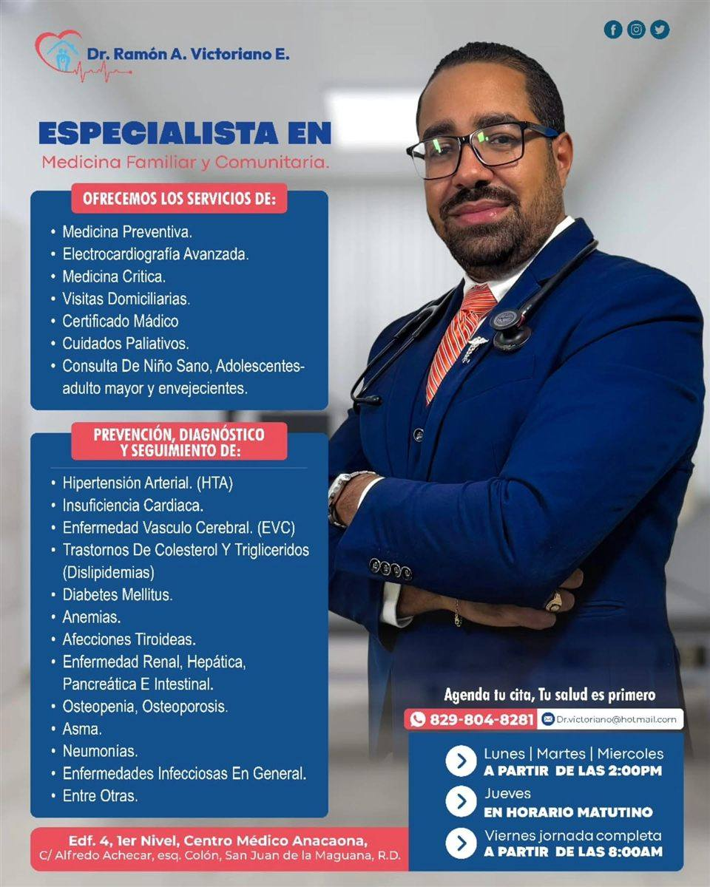

Prevención
Chequeos generales, orientación sobre vacunas y reducción de factores de riesgo.
Medicina familiar y comunitaria
Atención preventiva, seguimiento de enfermedades crónicas, visitas domiciliarias y educación para la salud con un trato humano y profesional.

Atención integral
Chequeos generales, orientación sobre vacunas y reducción de factores de riesgo.
Control de diabetes, hipertensión, insuficiencia cardíaca y otras condiciones crónicas.
Charlas, talleres y educación para mejorar los hábitos de salud de la familia.
Conozca al médico
Especialista enfocado en la medicina preventiva, el seguimiento continuo y la orientación clara para que cada paciente pueda tomar mejores decisiones sobre su salud.
Solicitar información